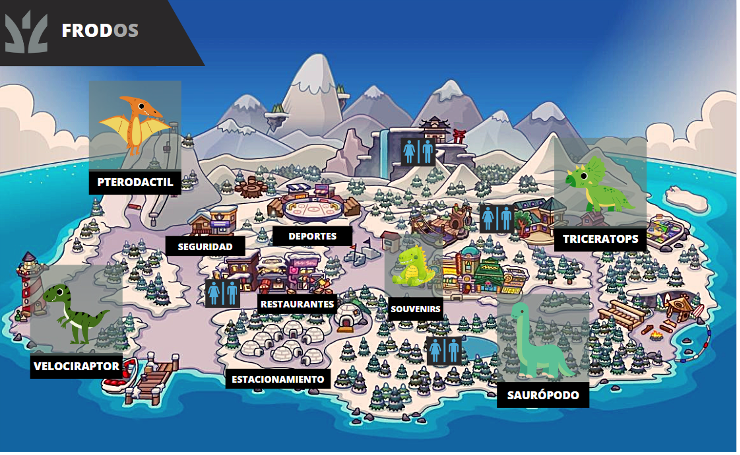
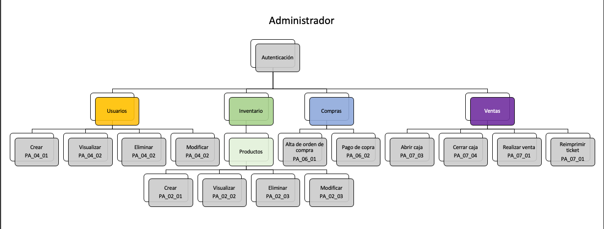

Aquí se presenta el contexto del proyecto.
Misión
Ser una tienda líder en el comercio de souvenirs local e internacional, ofreciendo a nuestros
clientes una amplia gama de productos que les permitan llevar consigo recuerdos auténticos y representativos de nuestra cultura y tradiciones,
siempre con calidad en el servicio y atención al cliente.
Visión
Ser reconocidos como tienda de souvenirs No. 1, siempre estar comprometidos con la calidad del producto y la completa satisfacción del cliente.
Expandir nuestra presencia en los mercados internacionales y continuar brindando una experiencia de compra única y memorable a todos los que visitan
nuestras tiendas.
Puntos Principales y metodología
El parque de dinosaurios FrodOS, es un parque de dinosaurios el cual, por sus servicios y facilidades, es un parque interactivo y seguro, hecho para todo
público. El parque está ubicado en un lugar con facilidad para todos de llegar, dicho parque cuenta con un estacionamiento con una capacidad de 1000 automóviles,
teniendo en cuenta que cada automóvil viene con una familia, el parque tendría capacidad de albergar a más de 6000 personas.
Dentro del parque, se encuentran los dinosaurios, los cuales están divididos por secciones, hay algunos que están en la arena, en ambiente frio o en ambientes calientes,
por lo tanto, los dinosaurios están divididos en secciones. El restaurante del parque también esta ambientado con temática de dinosaurios y también cuenta con tienda de souvenirs,
dicha tienda de souvenirs es la tienda que se analiza como negocio y se plantea con la metodología UML. La metodología UML (Unified Modeling Language) se utiliza para modelar y visualizar sistemas de software. Es un lenguaje de modelado estándar
que proporciona una notación gráfica la cual sirve para crear diagramas que describen diferentes aspectos de un sistema, como su estructura, comportamiento y procesos.


DocDeAnalisis